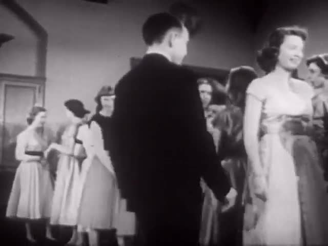
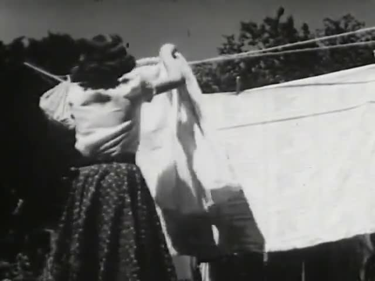

Edition comparisonOne prompt,
One prompt,
every hand.
Each row is a SCION operator. Each column is an edition. Open a cell for that film’s case study. A dash means the edition has not made that operator yet.
| Operator | Sonnet11 films | Geminiexpected | Argonexpected | OpenAI Solexpected |
|---|---|---|---|---|
| SCION 055Words |  critic: pass (qualified) · repaired45 s critic: pass (qualified) · repaired45 s | — | — | — |
| SCION 056Symmetry |  critic review pending54 s critic review pending54 s | — | — | — |
| SCION 057Moments |  critic: inconclusive53 s critic: inconclusive53 s | — | — | — |
| SCION 058Laughs! |  critic: inconclusive · ethics review open · repaired37 s critic: inconclusive · ethics review open · repaired37 s | — | — | — |
| SCION 059Ball |  critic: pass · repaired43 s critic: pass · repaired43 s | — | — | — |
| SCION 060Losers |  critic review pending · staged 1953 source37 s | — | — | — |
| SCION 061Matter | critic: inconclusive · diagram now labelled65 s | — | — | — |
| SCION 062Colors |  critic: pass (qualified)50 s critic: pass (qualified)50 s | — | — | — |
| SCION 063Breath |  critic: fail · v2 needs new footage57 s critic: fail · v2 needs new footage57 s | — | — | — |
| SCION 064Parabolas (etc.) |  critic: pass54 s critic: pass54 s | — | — | — |
| SCION 065Five |  critic review pending68 s | — | — | — |